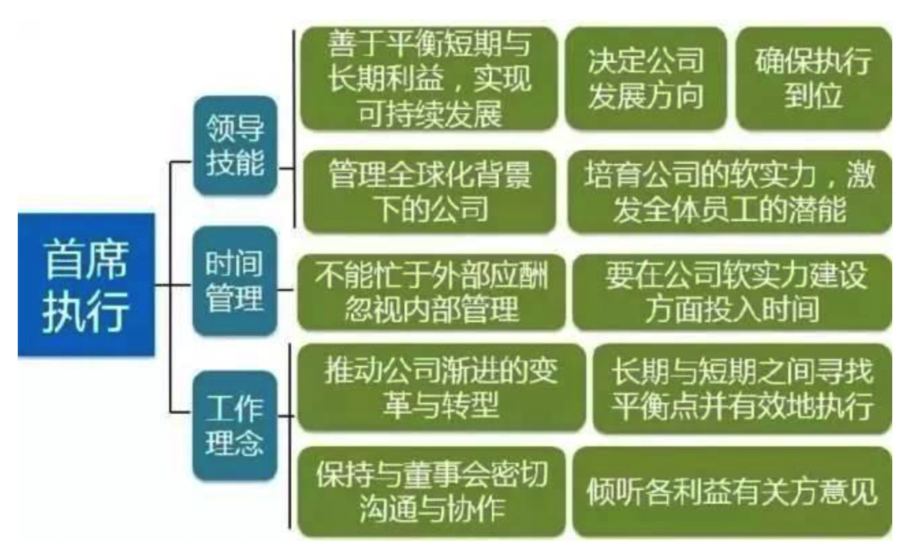

企业持续成长的三个阶段：
市场驱动型成长，创新驱动型成长和领导力驱动型成长
领导力发展的六个阶段
一线经理：从管理自我到管理他人
在第一阶段，一线经理的转型会遇到各种挑战：忽略与直接下属的沟通重要性；不愿意花时间去倾听下属的意见；还是按照以往的工作套路去完成任务；更多的时候是直接帮助下属完成工作，事必亲躬，而不是辅导下属如何去做。
无法提高下属的胜任力是一线经理在转型时遇到的关键挑战，这主要体现在4个方面：
- 把下属提出的问题当成是障碍；
- 补救下属工作失误，而非教会如何正确去完成挑战性工作；
- 拒绝与下属分享成功，逃避对下属的问题和失败；
- 没有给予足够的支持和建立员工的文化价值观。
直接上司如何帮助一线经理实现领导力转型？
- 让初任经理清楚地知道新岗位的要求，并为转型提供必要的培训；
- 确认初级经理在转型时是否遇到困难，困难是什么；
- 定期提供反馈和教练辅导，如果遇到困难就采取措施帮助他们解决。
部门总监：从管理他人到管理经理人员
这第二阶段，许多人会产生一个误区：管理他人和管理经理人员之间几乎没有差别。但其实部门总监与一线经理在领导技能、时间管理能力和工作理念方面有着重要的区别，如果没有实现这个阶段的领导力转型，总监们只是敷衍了事，将给公司带来严重损失。
部门总监负责的是公司中人员最集中的部门，完成绝大部分的生产性任务，其结果直接与公司的产品和服务紧密相连。可以想象，部门总监如果不能胜任自己的岗位，工作质量和工作效率将会受到多大影响！事实上，他们的工作很大程度上决定着公司的执行力和竞争优势。
如何帮助部门总监实现领导力转型？
- 让部门总监意识到管理员工和管理经理人员的区别，必须有适合的目标和标准：
- 工作效率提高的程度
- 教练辅导的频率和效果
- 提升和为其他部门输送一线经理的人数
- 工作中的团队合作和新领域的团队合作
- 新任一线经理的成功率
- 工作质量提高的幅度
- 明确所有标准中，最重要的是培养一线经理；
- 总监必须有全局的战略，并将高层战略向下属传达、解释、帮助下属理解，同时将基层员工的执行能力反馈给战略制定者。
事业部副总经理：从管理经理人员到管理职能部门
对事业部副总经理的五大关键要求：
要求一：成熟度
只专注于自身所在的领域或者自己喜欢的事物。
无法客观评估职责领域的价值，通常高估自己以前熟悉的领域价值，低估不熟悉的领域价值。
要求二：拥有战略思维
明白其他领域的职责和对公司的贡献度，以及这些领域与他自己的职能之间的互相影响机制。
要求三：制定职能战略
事业部副总需要从“为职能战略实施而制定支持性的经营计划”提升为“制定职能战略”。
要求四：管理整个职能部门
积极倾听需求和纳谏能力。
要求五：综合学习能力
重视他们不知道的东西，并愿意去了解学习，这里副总经理需要知道以下问题：
- 员工都在做什么？
- 他们是否得到合理的管理、发展、奖励和指导？
- 他们是否对业务战略、盈利模式、职能战略、商业挑战、竞争优势和短期工作重点有足够的了解，以便开展工作？
- 员工面临什么问题？公司的困难是什么？
- 在改进他们自身、所在职能部门以及公司绩效方面，他们有哪些想法？
- 决策周期的速度是否足够快？
- 正在发生什么创新？
从管理职能部门到事业部总经理
在第四阶段，转型的困难主要有4点：
- 缺乏激励的沟通：根源在于没有学会从不同的角度来考虑业务；
- 没有能力组建强大的团队：部门不协调、通过该产品或技术来运营业务而非通过人员；
- 没有掌握业务赚钱技巧：缺乏对业务核心流程的理解；
- 时间管理很难在各种工作上找到平衡点，热衷于事必亲躬而非打造高效团队，无法从整体业务的角度来看待优先任务。
对事业部总经理管理的五个关键任务：
任务一：利用管理工具——协同三角模型；
任务二：学会评估和协调各个部门的工作，发挥团队优势；
任务三：提高工作透明度，帮助下属变得更加开放并具有灵活性；
任务四：应用电子商务的挑战，需要不断要求自己和他人开拓眼界和知识；
任务五：懂得分析市场竞争优势（产品-客户-竞争）。
从管理事业部总经理到集团高管
在第五阶段，工作理念的转变更加重视他人的成功，即间接成功。
当然，在这个阶段，集团的高管通常遇到的困难主要以下4点：
- 像事业部总经理一样工作：直接表现为为下属部门制定战略，直接指导事业部总经理的工作；
- 维持一种集团公司对立的关系：高管应该投入大量的时间，大约三分之一的时间处理集团公司层面的事情；
- 管理者容易忽略新的商业机会，只关注现在的业务；
- 不重视培养事业部总经理的机会，认为处于总经理级别的员工能做到自我培养，忽略了培养下一任接班人的重要性。
从管理集团高管到首席执行官

成功的首席执行官既要能展示出对人事的准确判断，又要使得公司具有强大的执行力。首席执行官不能犯重大错误，出错的成本对集团相当昂贵。
首席执行官的领导力“5+3”理念。
“5”个重要领导力挑战。
- 善于平衡短期和长期利益，实现可持续发展；
- 设定公司发展的方向；
- 培育公司的软实力；
- 将公司战略执行到位；
- 管理全球化背景下的公司。
“3”个工作理念转变。
- 需要在接受长期计划下，公司业绩变化的速度缓慢，耐心细致地等待循环渐进的公司转型；
- 如何听取董事会的意见；
- 善于向各种各样的人提出问题，并听取他们的意见，通过与他人分享自己的远见卓识激发他们的兴趣、调动他们的工作热情。 首席执行官的成长路径应该是：在职业生涯的早期就具备在公司核心部门多个职位工作的经历，随之职务的晋升至少有一次海外任职经历，同时当业务的规模不断增大，领导不同的业务部门突破性增长，管理一个新的业务群。